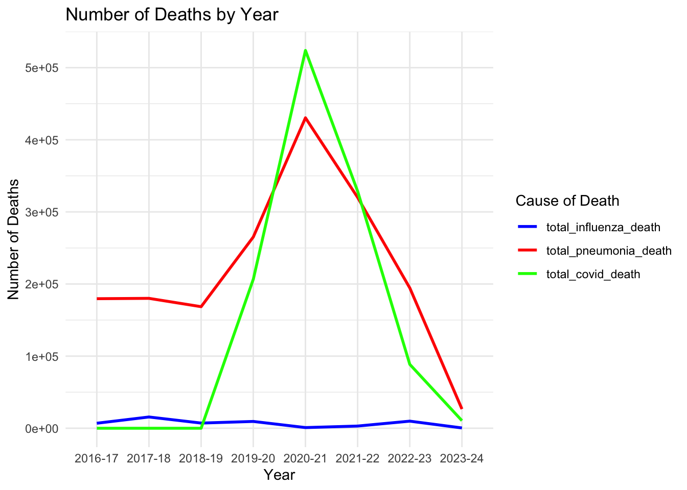
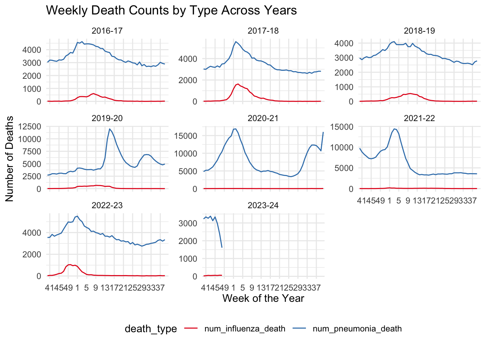

Code
library(ggplot2)
library(dplyr)
library(reshape2)
library(gridExtra)
library(tidyr)
library(plotly)
library(GGally)
library(ggridges)library(ggplot2)
library(dplyr)
library(reshape2)
library(gridExtra)
library(tidyr)
library(plotly)
library(GGally)
library(ggridges)During the outbreak, populace were educated and informed that COVID-19 is transmitted through our respiratory systems. We would like to start observing diseases that are also transmitted through our respiratory system, i.e. influenza and pneumonia, have similar or basically the same patterns as that of COVID-19.
# Data4 is national wise data
# Read data
data4 <- read.csv("data/data4.csv")
# Change column names and remove unnecessary columns
data4 <- data4 %>%
rename(
year = SEASON,
week = WEEK,
num_influenza_death = NUM.INFLUENZA.DEATHS,
num_pneumonia_death = NUM.PNEUMONIA.DEATHS,
num_covid_death = NUM.COVID.19.DEATHS,
total_pic = TOTAL.PIC,
total_deaths = TOTAL.DEATHS
) %>%
select(-AREA, -SUB.AREA, -AGE.GROUP, -THRESHOLD, -BASELINE, -PERCENT.I, -PERCENT.P.I,
-PERCENT.PIC, -PERCENT.COMPLETE)
data4 <- data4 %>%
mutate(
num_influenza_death = as.numeric(gsub(",", "", num_influenza_death)),
num_pneumonia_death = as.numeric(gsub(",", "", num_pneumonia_death)),
num_covid_death = as.numeric(gsub(",", "", num_covid_death))
)
# Aggregate the data by year to get the total deaths for each cause
total_deaths <- data4 %>%
group_by(year) %>%
summarise(
total_influenza_death = sum(num_influenza_death, na.rm = TRUE),
total_pneumonia_death = sum(num_pneumonia_death, na.rm = TRUE),
total_covid_death = sum(num_covid_death, na.rm = TRUE)
)
# Transform data to long format for plotting
long_data_line <- total_deaths %>%
select(year, total_influenza_death, total_pneumonia_death, total_covid_death) %>%
pivot_longer(
cols = starts_with("total"),
names_to = "cause",
values_to = "deaths"
) %>%
mutate(cause = factor(cause, levels = c("total_influenza_death",
"total_pneumonia_death",
"total_covid_death")))
# Plot the data
ggplot(long_data_line, aes(x = year, y = deaths, color = cause, group = cause)) +
geom_line(size = 1) +
scale_color_manual(values = c("total_influenza_death" = "blue",
"total_pneumonia_death" = "red",
"total_covid_death" = "green")) +
labs(title = "Number of Deaths by Year",
x = "Year",
y = "Number of Deaths",
color = "Cause of Death") +
theme_minimal()
To confirm our observation above, we need to dive further into the dataset individually for influenza and pneumonia year by year starting from 2016 till this year. We do so by generating a faceted plot on years, where x axis denotes week within the year; y axis denotes the number of deaths; the two lines representing the number of influenza deaths and pneumonia deaths
# Reshape the data to long format
long_data_line2 <- data4 %>%
select(week, year, num_influenza_death, num_pneumonia_death) %>%
pivot_longer(
cols = starts_with("num"),
names_to = "death_type",
values_to = "num_deaths"
)
long_data_line2 <- long_data_line2 %>%
mutate(week_order = factor(week, levels = c(40:52, 1:39)))
# Create the plot with facets for each season and lines for two death types
ggplot(long_data_line2, aes(x = week_order, y = num_deaths, color = death_type, group = death_type)) +
geom_line() +
facet_wrap(~ year, scales = "free_y") +
theme_minimal() +
labs(title = "Weekly Death Counts by Type Across Years",
x = "Week of the Year",
y = "Number of Deaths") +
scale_color_brewer(palette = "Set1") +
theme(legend.position = "bottom") +
theme(axis.text.x = element_text(vjust = 0.5)) +
scale_x_discrete(breaks = function(x) seq(1, length(x), by = 4))
Knowing the trends individually gives us partial idea on the deaths of each disease. We cannot tell whether casualties of certain number is considered fortune or critical given the surroundings at the moment. Hence, it is more worthwhile to put them together and compare their relative proportion over the timeline. We achieve this objective through stacked bar charts where x axis is year; y axis is number of deaths and bar charts are stacked from three colors with each representing the death of COVID, influenza and pneumonia.
# Reshape the data to a long format for plotting
long_data_stacked <- total_deaths %>%
select(year, total_influenza_death, total_pneumonia_death, total_covid_death) %>%
pivot_longer(
cols = c(total_influenza_death, total_pneumonia_death, total_covid_death),
names_to = "death_type",
values_to = "deaths"
)
# Plot the stacked bar chart
ggplot(long_data_stacked, aes(x = year, y = deaths, fill = death_type)) +
geom_bar(stat = "identity", position = "stack") +
labs(title = "Total Annual Deaths by Cause",
x = "Year",
y = "Number of Deaths",
fill = "Cause of Death") +
theme_minimal()After exploring national trends for these three diseases, we would like to know more about the relationships between the different types of death counts and also the relationnship between death counts and year over state level. We created a ggplotly interactive plot where x-axis is num_influenza_death, y-axis is num_pneumonia_death and the time information when hovered. It could show if there’s any correlation between the two types of deaths on a state-by-state basis over a given year.
# Data1 is state wise data
# Read data
data1 <- read.csv("data/data1.csv")
# Change column names and remove unnecessary columns
data1 <- data1 %>%
rename(
state = SUB.AREA,
year = SEASON,
week = WEEK,
num_influenza_death = NUM.INFLUENZA.DEATHS,
num_pneumonia_death = NUM.PNEUMONIA.DEATHS,
num_covid_death = NUM.COVID.19.DEATHS,
total_pic = TOTAL.PIC,
total_deaths = TOTAL.DEATHS
) %>%
select(-AREA, -AGE.GROUP, -PERCENT.I, -PERCENT.P.I, -PERCENT.PIC, -PERCENT.COMPLETE)
# Aggregate the data to get total yearly deaths by state
yearly_deaths_by_state <- data1 %>%
group_by(state, year) %>%
summarise(
total_influenza_death = sum(as.numeric(gsub(",", "", num_influenza_death)), na.rm = TRUE),
total_pneumonia_death = sum(as.numeric(gsub(",", "", num_pneumonia_death)), na.rm = TRUE)
) %>%
ungroup()
yearly_deaths_by_state$state <- as.factor(yearly_deaths_by_state$state)
# Create an interactive scatter plot
plot_ly(data = yearly_deaths_by_state, x = ~total_influenza_death, y = ~total_pneumonia_death,
type = 'scatter', mode = 'markers',
#color = ~state,
text = ~paste('State:', state, '<br>Year:', year), # Text to display on hover
hoverinfo = 'text', # Show text on hover
marker = list(size = 10, opacity = 0.6)) %>%
layout(title = 'Total Deaths from Influenza vs. Pneumonia by State and Year',
xaxis = list(title = 'Total Influenza Deaths'),
yaxis = list(title = 'Total Pneumonia Deaths'))To verify our previous concerns on outliers which state has the highest number of deaths because of these three death causes across the year, we would like to use a heatmap to have a more straightforward idea on the frequency of death for across the years.
# Convert the death count columns from character to numeric
data1 <- data1 %>%
mutate(
total_pic = as.numeric(gsub(",", "", total_pic))
)
# Calculate total deaths for each state across all years
state_total_deaths <- data1 %>%
group_by(state) %>%
summarise(total_pic_deaths = sum(total_pic, na.rm = TRUE)) %>%
ungroup()
# Aggregate the data by state and year
state_yearly_deaths <- data1 %>%
group_by(state, year) %>%
summarise(total_pic = sum(total_pic, na.rm = TRUE)) %>%
ungroup()
# Join this information with the state_yearly_deaths and reorder the state factor
state_yearly_deaths <- state_yearly_deaths %>%
left_join(state_total_deaths, by = "state") %>%
mutate(state = reorder(state, total_pic_deaths)) %>%
select(-total_pic_deaths)
# Reshape the data for the heatmap
heatmap_data <- reshape2::melt(state_yearly_deaths, id.vars = c("state", "year"))
# Create the heatmap
ggplot(heatmap_data, aes(x = year, y = state, fill = value)) +
geom_tile() + # Use geom_tile for heatmap squares
scale_fill_gradient(low = "white", high = "red") + # Use a gradient from white to red for the fill
labs(title = "Heatmap of Total Deaths by State and Year",
x = "Year",
y = "State",
fill = "Total Deaths") +
theme_minimal() +
theme(axis.text.x = element_text(hjust = 1), # Angle the x-axis text for better readability
axis.text.y = element_text(size = 7)) # Adjust the size of the y-axis text if neededTo check that if disease transmission methods would be a factor influencing the their total deaths, we used a parellel coordinate plot, where each line is a date; each axis is one of the 10 diseases causes, to see what are the top several ones.
# Read data
data2 <- read.csv("data/data2.csv")
# Select necessary columns and rename them
data2 <- data2 %>%
select(occurrence = Jurisdiction.of.Occurrence,
year = MMWR.Year,
week = MMWR.Week,
date = Week.Ending.Date,
all_cause = All.Cause,
natural_cause = Natural.Cause,
septicemia = Septicemia..A40.A41.,
malignant_neoplasms = Malignant.neoplasms..C00.C97.,
diabetes_mellitus = Diabetes.mellitus..E10.E14.,
alzheimer = Alzheimer.disease..G30.,
influenza_pneumonia = Influenza.and.pneumonia..J09.J18.,
chronic_respiratory = Chronic.lower.respiratory.diseases..J40.J47.,
other_respiratory = Other.diseases.of.respiratory.system..J00.J06.J30.J39.J67.J70.J98.,
nephritis = Nephritis..nephrotic.syndrome.and.nephrosis..N00.N07.N17.N19.N25.N27.,
non_classified = Symptoms..signs.and.abnormal.clinical.and.laboratory.findings..not.elsewhere.classified..R00.R99.,
heart_diseases = Diseases.of.heart..I00.I09.I11.I13.I20.I51.,
cerebrovascular = Cerebrovascular.diseases..I60.I69.,
covid19_multiple = COVID.19..U071..Multiple.Cause.of.Death.,
covid19_underlying = COVID.19..U071..Underlying.Cause.of.Death.)
# Choose ten specific diseases, including septicemia, malignant_neoplasms, diabetes_mellitus, alzheimer, influenza_pneumonia, combined respiratory, nephritis, heart_diseases, cerebrovascular, covid19)
# Combine column1 and column2 into a new column called combined
data2 <- data2 %>%
mutate(combined_respiratory = chronic_respiratory + other_respiratory,
combined_covid19 = covid19_multiple + covid19_underlying)
new_data2 <- data2 %>%
filter(occurrence == 'United States')
fig <- plot_ly(type = 'parcoords',
line = list(color = as.integer(as.factor(new_data2$date))),
dimensions = list(
list(label = 'Septicemia', values = new_data2$septicemia),
list(label = 'Malignant Neoplasms', values = new_data2$malignant_neoplasms),
list(label = 'Diabetes Mellitus', values = new_data2$diabetes_mellitus),
list(label = 'Alzheimer', values = new_data2$alzheimer),
list(label = 'Influenza Pneumonia', values = new_data2$influenza_pneumonia),
list(label = 'Chronic Respiratory', values = new_data2$combined_respiratory),
list(label = 'Nephritis', values = new_data2$nephritis),
list(label = 'Heart Diseases', values = new_data2$heart_diseases),
list(label = 'Cerebrovascular', values = new_data2$cerebrovascular),
list(label = 'COVID-19', values = new_data2$combined_covid19)
)) %>% layout(
title = "Parallel Coordinates Plot for Causes of Death",
font = list(size = 9) # Adjust font size
)
# Show the plot
figIdea: Scatterplot matrix
filtered_data2 <- data2 %>%
filter(year == '2020', occurrence == 'United States')
selected_data <- filtered_data2 %>%
select(septicemia, malignant_neoplasms, diabetes_mellitus, alzheimer,
influenza_pneumonia, combined_respiratory, nephritis, heart_diseases,
cerebrovascular, combined_covid19)
# Create the scatter plot matrix
plot <- ggpairs(selected_data,
title = "Scatter Plot Matrix for Disease Relationships",
upper = list(continuous = wrap("cor", size = 3)), # Correlation in upper panels with smaller text
lower = list(continuous = wrap("points", size = 0.3, alpha = 0.5)), # Points in lower panels with alpha blending
diag = list(continuous = wrap("densityDiag", size = 0.5))) # Diagonal density plots with smaller text)
# Customize the plot to improve readability of labels
plot <- plot +
theme(
# Rotate the text for x and y axis labels to avoid overlap
axis.text.x = element_text(vjust = 1, hjust = 1, size = 3.5),
axis.text.y = element_text(vjust = 1, hjust = 1, size = 5),
axis.title.x = element_text(size = 5),
axis.title.y = element_text(size = 7),
strip.text = element_text(size = 5)
)
# Render the plot
plot
# Read data
data3_adult <- read.csv("data/data3_adult.csv")
# Change format "Month_Week" column (only extract the month)
data3_adult$Month_Week <- sub(" .*", "", data3_adult$Month_Week)# Read data
data3_youth <- read.csv("data/data3_youth.csv")
# Change format "Month_Week" column (only extract the month)
data3_youth$Month_Week <- sub(" .*", "", data3_youth$Month_Week)